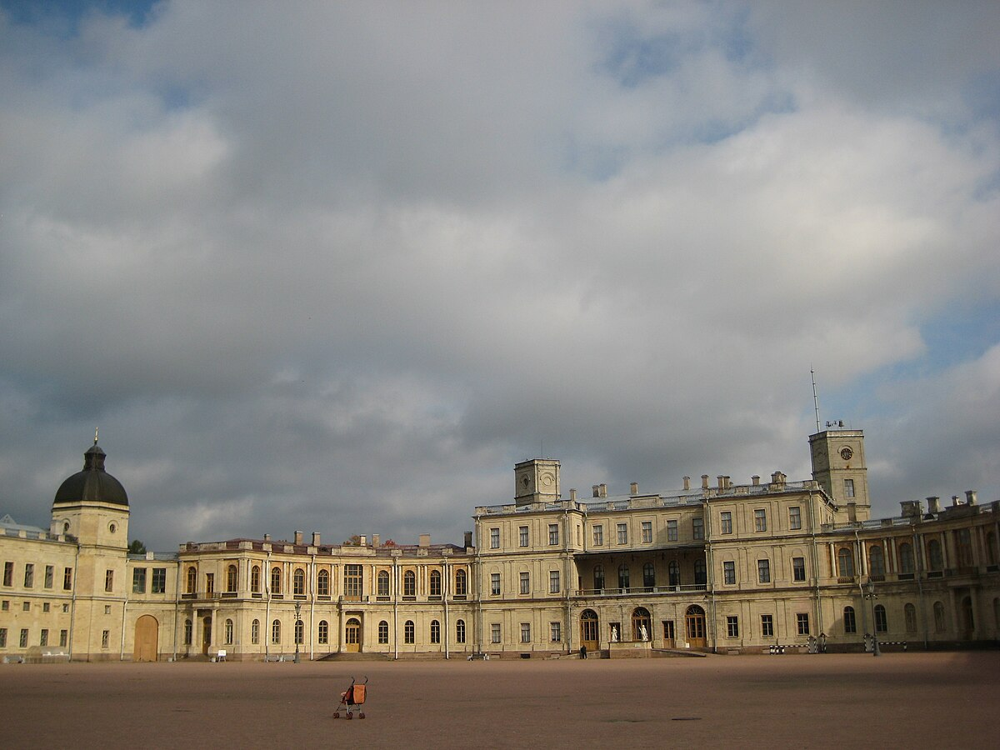
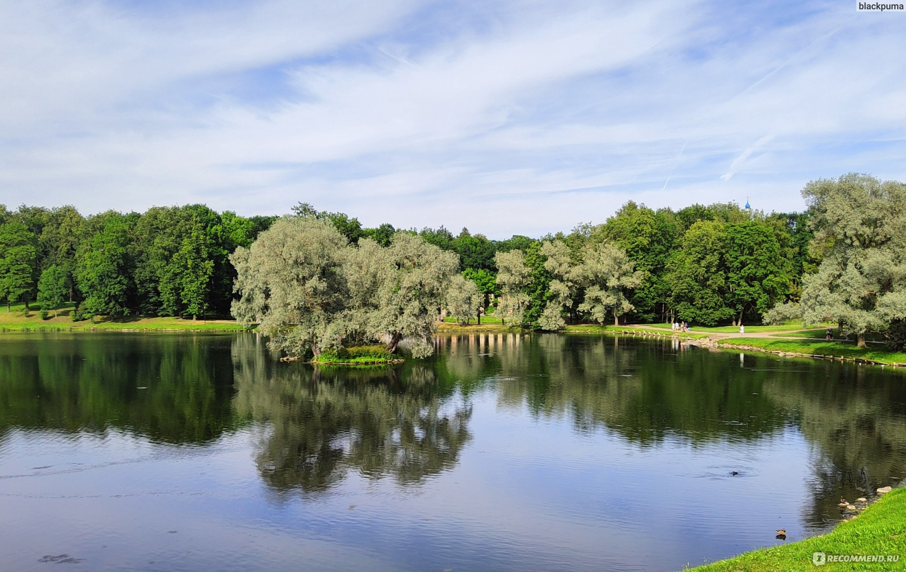
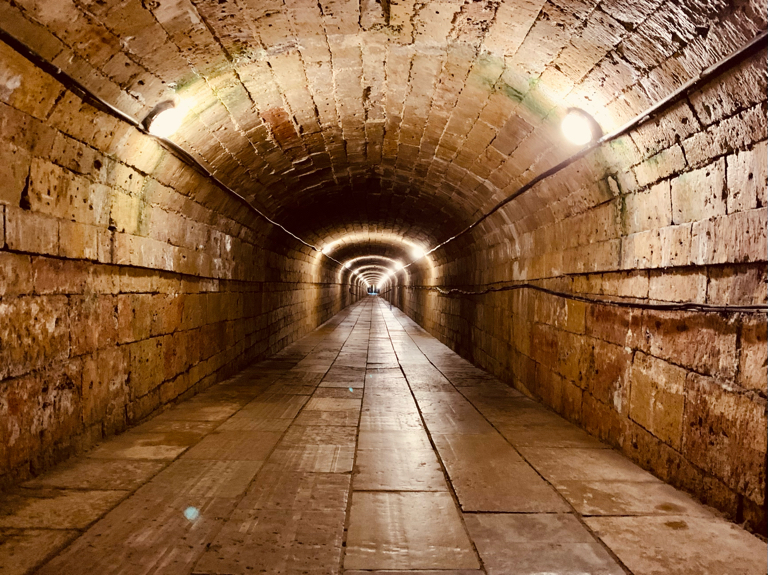
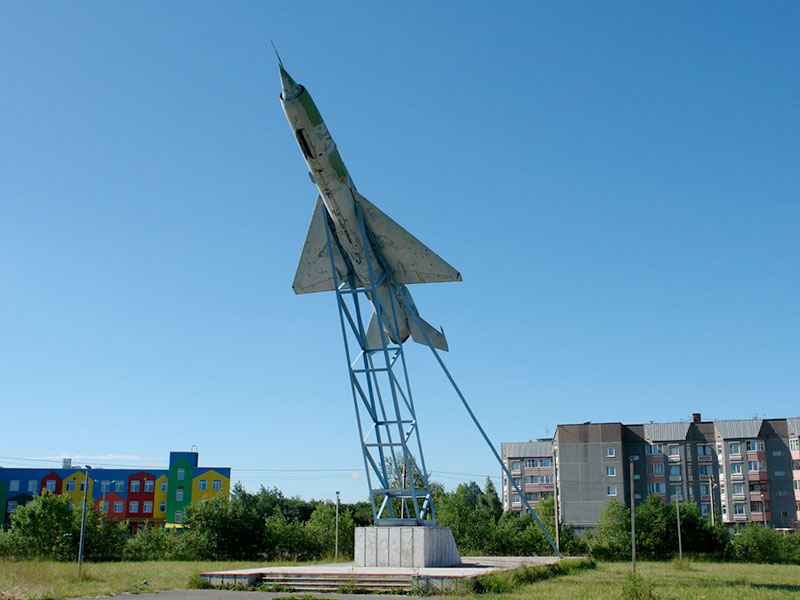

Гатчинский дворец
Экскурсии по парадным залам и подземным ходам.
Откройте для себя величие дворцов, тайны подземных ходов и красоту старинных парков
Начать путешествиеГатчина — один из самых живописных и исторически значимых городов Ленинградской области, расположенный всего в 45 километрах от Санкт-Петербурга. Основанный в XVIII веке, город стал резиденцией российских императоров и до сих пор хранит дух аристократической эпохи. Главной достопримечательностью Гатчины является величественный Гатчинский дворец, построенный архитектором Антонио Ринальди для графа Григория Орлова, а позже подаренный Екатериной II её сыну Павлу I.
Дворец окружён обширным парком с прудами, мостами и павильонами, среди которых особенно выделяется «Эхо» — акустический грот, где шёпот слышен на расстоянии. Под землёй проложена уникальная система подземных ходов, использовавшихся для тайных выходов императора. Сегодня Гатчинский дворец — музей, входящий в состав «Музеев Московского Кремля», и входит в список объектов Всемирного наследия ЮНЕСКО как часть «Исторического центра Санкт-Петербурга и связанных с ним ансамблей».
Город активно развивает культурное наследие: здесь проводятся реконструкции, фестивали исторических костюмов, музыкальные вечера в парке и образовательные программы для школьников. Гатчина — не только место для туристов, но и центр просвещения, где история оживает через интерактивные экспозиции и театральные постановки.
Помимо дворца, в Гатчине стоит посетить Белосельский-Белозерский дворец, Александровскую церковь, музей авиации и космонавтики имени Гагарина, а также знаменитый Гатчинский аэродром — один из первых в России. Природа региона отличается мягкими ландшафтами, чистыми озёрами и сосновыми лесами, что делает город идеальным местом для семейного отдыха.
Современная Гатчина сочетает историческую атмосферу с развитой инфраструктурой: удобные отели, кафе с авторской кухней, велодорожки и экологические маршруты. Город гордится своими жителями — потомками дворцовых служителей, учёных и военных, чья преданность делу сформировала уникальный характер Гатчины.




Экскурсии по парадным залам и подземным ходам.
Прогулка по аллеям с акустическими загадками.
История полётов от братьев Райт до Гагарина.
Уютные улицы, кафе и памятники XIX века.
Отдых на природе, рыбалка, веломаршруты.
Ежегодное событие с реконструкциями и балами.
Свяжитесь с нами для организации экскурсий: